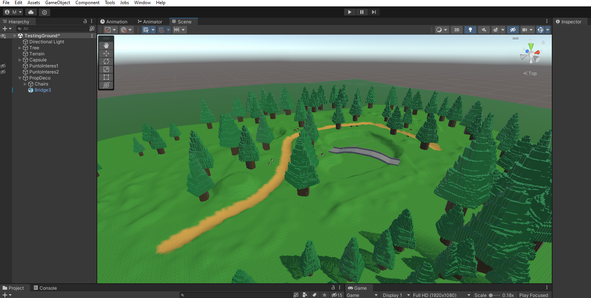
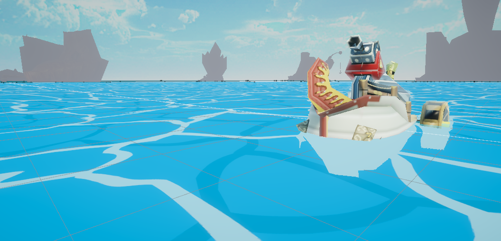

Marco Antonio Batista Montaño
Inicio
Proyectos
Sobre mi
Contacto
Proyectos
DashSlash - Rol: Desarrollador Principal
GooseGun - Rol: Diseñador de Juego/Desarrollador Principal

Phantom hourglass en unity - Rol: Desarrollador Principal
